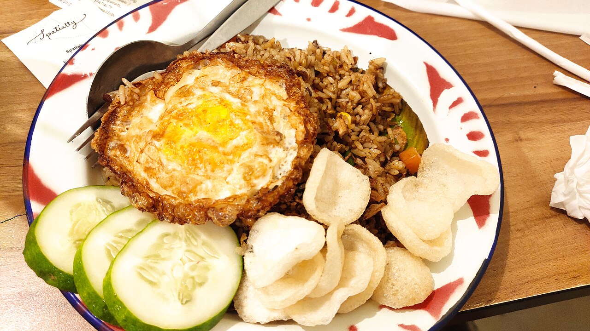

Nasi Goreng Kampung
Resep hemat untuk 2 porsi, siap dalam 15 menit.

Bahan
- 2 piring nasi putih
- Bumbu halus
- 3 siung bawang merah
- 2 siung bawang putih
- 2 butir telur
Langkah Memasak
- Tumis bumbu halus hingga harum.
- Masukkan telur, lalu orak-arik.
- Masukkan nasi dan aduk rata.
Informasi Gizi per Porsi
- Energi
- 450 kkal
- Protein
- 14 gram